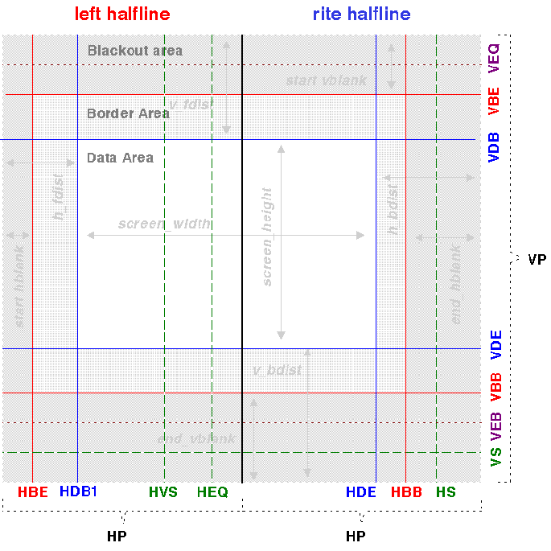
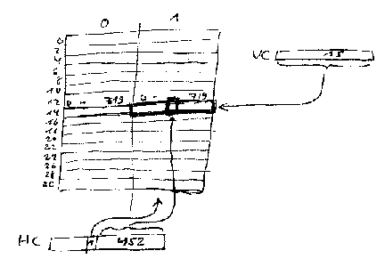

# -------------------------------------------------------------------
# VIDEO (c) Copyright 1995 KKP & Nat!
# -------------------------------------------------------------------
# These are some of the results/guesses that Klaus and I Nat! found
# out about the Jaguar with a few helpful hints by other people,
# who'd prefer to remain anonymous.
# HDB2, accurate linebuffer, CLUT info by NEUROMANCER
#
# Since we are not under NDA or anything from
# Atari we feel free to give this to you for educational purposes
# only.
#
# Please note, that this is not official documentation from Atari
# or derived work thereof (both of us have never seen the Atari docs)
# and Atari isn't connected with this in any way.
#
# Please use this informationphile as a starting point for your own
# exploration and not as a reference. If you find anything innacurate,
# missing, needing more explanation etc. by all means please write
# to us:
# nat@zumdick.ruhr.de
# or
# kp@eegholm.dk
#
# If you could do us a small favor, don't use this information for
# those lame flamewars on r.g.v.a or the mailing list.
#
# HTML soon ?
# -------------------------------------------------------------------
# $Id: video.html,v 1.22 1997/11/16 18:14:42 nat Exp $
# -------------------------------------------------------------------
##########################################################################
T H I S S H I T I S P O T E N T I A L L Y D A N G E R O U S
T O Y O U R T V - S E T O R M O N I T O R .
U S E T H I S I N F O R M A T I O N A T Y O U R O W N R I S K.
You better NOT fuck with the video registers, unless you can bear the
disappointment of a broken TV-set or monitor. I'd suggest to read up
on a TV instructors manual beforehand. We disclaim any responsibility
for damage on hardware, because you used this information.
###########################################################################
This documentation is at the moment in a transitory state.
0 Linebuffer ============= To understand the video chip, you need to understand that the video chip is not a DMA device. It doesn't have a screen memory it reads the displayable image from, but only has two small 1440 byte linebuffers, that it uses to produce the color data for a scanline. It is dependent on other chips to fill its internal linebuffer with data. The linebuffer is a 1.4Kb large strip of RAM. It is organized either as 720 16-bit pixels, or as 360 32-bit pixels. The color representation employed and the size of the pixels can be selected with VMODE. If a resolution of higher than 720/360 pixels is desired, than you must use both linebuffers at the same time. (HDB2) Someone 1 Video Modes =============== With the VMODE register, you can switch between some modes of operation in the graphics chip. It is possible to switch between 32 bit pixels and 16 bit pixels. It is possible to switch between 16 bit RGB modes and 16 bit CrY modes. There is also a mixed mode, that uses the LSB of a pixel to distinguish betweeen 5-5-5 RGB color mode and 8-7 CrY mode. It is possibly possible to switch between interlace and non-interlace. 2 Controlling the Monitor ==========================  The video chip needs to be set up with all the values you see marked with three- (or two-)letter codes in the picture, as there are: HP: horizontal period HBB: begin of horizontal blank HBE: end of horizontal blank HDB(12): start of horizontal display HDE: end of horizontal display HS: horizontal sync impulse HEQ: horizontal EQ impulse (left halfline) HVS: vertical sync impulse (horizontal position) VP: vertical period VBB: begin of vertical blank VBE: end of vertical blank VDB: begin of vertical display VDE: end of vertical display VEB: begin of EQ VEE: end of EQ VS: initiate vertical syncing As you can see the screen is divided in two halflines, quite like the Falcon. Please don't ask me what that is good for it is just the way it is. Each halfline starts at zero and counts up to HP. The second scanline is marked with a $400. If you understand this part you'll have little problem following with what is going on. You have to specify the horizontal frequency in terms of cycles per scanline (almost) and the total number of scanlines per frame. So the total time taken for one frame should be: one_frame = horizontal_cycles * number_of_scanlines now calculate in the refresh rate and you get total_cyles = one_frame * refresh_rate and the other way around horizontal_cycles = total_cycles / refresh_rate / number_of_scanlines Now starting from this you design the horizontal and vertical blanking. The total number of cycles taken for one horizontal blank is: horizontal_blanking_cycles = start_hblank + end_hblank The number of potentially visible cycles is visible_cycles = horizontal_cycles - horizontal_blanking_cycles The total number of scanlines used in the blanking area is blanking_scanlines = start_vblank + end_vblank The number of potentially visible scanlines is visible_scanlines = number_of_scanlines - blanking_scanlines In the time the video chip is not blanking it is outputting color information. The video chip can either output a border color or pixel data. From the time the horizontal blanking ends until pixel output occurs, the video chip will display the border color. It will also display the border color, when pixel output is finished and the next horizontal blank is not yet initiated. The video system keeps track of what it is doing with two registers called VC (for Vertical Counter) and HC (Horizontal Counter). The following image depicts a 16 scanlines heighted screen.  As you can see each scanline is split into two halflines. Usually the pixel data is displayed in the left half only! Lets go through one _visible_ horizontal line step by step. 1. The video chip isn't displaying anything its internal counter (HC) is set to zero. It is in the blanking phase. It will continue to be in this phase until ... 2. The HC reaches HBE, the end of the horizontal blank. It now starts to output the border color (in BORD) to the DAC until ... 3. HC reaches HDB1, the begin of the display area. The video chip will now fetch the values from the linebuffer and send them to the DAC. At the same time the other linebuffer is initialized with the default color and the OP is called to prepare the other linebuffer until ... [ after finishing the first linebuffer HC's bit #10 ($400) will be set, and the counter be reset to 0. 4. it reaches HDB2 (or possibly not). If it does reach it, then its basically like step #3. The OP is called also AGAIN!. The OP will have no idea, that this second buffer is on the same scanline, except if you program its object list to recognize that fact! Actually in 99% of the cases HDB2 is just HDB1 or outside of the scanlines lenfth, so nothing special happens until... 5. HC reaches HDE. At this point the linebuffer is of no interest anymore and the border color is displayed again until... [ Maybe HDE must have bit #10 cleared in double linebuffer (HDB2) mode ? ] [ At this point the OP can now fill the linebuffer for the scanline two scanlines ahead. It probably is started right at this moment ] 6. HBB, the start of the horizontal blanking period is reached. Now the DAC is turned off and not much happens, until... 7. HC reaches the HS. Now the horizontal synch signal is sent and nothing much of interest will happen until we're back at step 1. We did not use the HEQ and the HVS registers. Well the HVS register will be used, when we describe the vertical scanline organization in a bit more detail. My take on the EQ thing is this: Shortly before the VSYNC, the video chip will send out a few impulses to synchronize for the next VSYNC and it will do so for a while after the VSYNC impulses have passed. It seems that with HEQ you can specify the place where one half of the equalitation impulse should occur. (The other half occur either at the same position of the second halfline, or - second theory- at the position of the HSYNC. I kinda favor the first theory.) With the VEB and VEE you can prescribe where the EQ should be happening. For german EE guys, I am trying to match the "Trabantenkonzept" unto this equalization thing. Lets go through one frames worth of scanlines step by step: 1. The video chip isn't displaying anything its internal counter (VC) is set to zero. It is in the blanking phase. It will probably continue to do equalization (no HSYNCs just EQ pulses) until... 2. The VC reaches VEE, the end of the EQ section. Now it will revert to sending normal HSYNCs instead of "Trabanten", but it still keeps on blanking until... 3. HC reaches VBE, the end of the blanking area. The video chip will now start processing the 'visible scanlines' first only displaying border colors until ... 4. it reaches VDB. It will now start processing scanlines as described above until... 5. VC reaches VDE. At this point we are back to displaying the border color. This will continue until VC reaches... 6. VBB, the start of the vertical blanking period. Now the border color will not be displayed and not much happens, until... 7. HC reaches the VEB. The begin of the equalization section. Now the video chip stops sending HSYNCs and starts sending "Trabanten" or EQ-impulses. This is all of course in preparation for the event of VC's content matching... 8. the content of the VS register. Now the vertical synch signal is sent and nothing much of interest will happen until we're back at step 1. Calculating the vertical registers: =-=-=-=-=-=-=-=-=-=-=-=-=-=-=-=-=-= The vertical period is the number of scanlines per refresh. Now we gotta consider a refresh in NTSC terms, there one refresh is split into two half pictures. The picture is split into even and odd scanlines and the even lines are shown in the first frame and the odd lines are shown in the second frame. The VP thinks in NTSC term so even if it is not running in interlace mode, we gotta prepare it as if it was running in interlace mode. What does that mean ? Well basically double every value in sight :) Except of course the VP register, which is special: VP: 525 (we already knew that) Now lets do the VSYNC like this, we need 3 lines for VSYNC impulses and we double this value so: VS: VP - 6 = 519 The equalization should happen three scanlines before the VSYNC and three lines after, so we set (doubling again): VEB: VS - 6 = 513 VEE: 6 Gotta figure, where it all begins. We need to blank at least on the line of the EQ phase. So lets use this and give two scanlines for safety. (Remember the doubling: 2*2=4) VBB: VEB - 4 = 509 Now right here we got a tiny little problem because this number is odd, and odd numbers address in non interlaced mode mean the right halfline only,so we round down to 508. VBB: 508 After the VSYNC impulses we need to allow some time for the retrace. NTSC takes 40 scanlines total for vertical blanking. VBE: 40 - (VP - VBB) = 23 -> 24 We'll set it up for 200 visible lines and let the border color the other lines. For (mathematically) aesthetic reasons, we're going to center our picture in the border. VDB: VBE + ((485 - 400) / 2) = 66 VDE: VDB + ((200 - 1) * 2) = 464 Calculating the horizontal registers: =-=-=-=-=-=-=-=-=-=-=-=-=-=-=-=-=-=-= You calculate the value for the HP-register like this: If the Jaguar FAQ is correct, the machine runs with 26.591 Mhz. For an NTSC TV-set you wanna do 29.97 Hz refreshes a 525 lines, or ca. 60Hz with 262.5 lines. We know that HP covers half a scanline (see the picture) so, we calculate the length of one halfline in terms of the Jaguars clock: HP: 26.591 Mhz / 29.97Hz / 525 = 1690 cycles / 2 = 845 One halfline takes 1 / 29.97 / 525 = 63.56 us time. There's a certain amount of time you have to spend in the horizontal and vertical blanking period, because the beams retrace speed is something you can't manipulate. So these numbers are pretty much constant. H H H B E | B H E Q | B S +----v------------------------v--+------------------------v-v----+ / | | | | | | \ 0 10 20 30 40 50 60 63 Lets use: for the starting blank 4.6 us length for the ending blank 6.4 us length lets do the hsync at 59.0 us and the EQ at 29.5 us (and 61.3 us ?) This will become a bit mathematical I am afraid: HBE HP*2 1690 * 4.6 us ------ = -------- HBE = ----------- HBE = 122 4,6 us 63.56 us 63.56 us Now HBB will start at position 63.56 - 6.4 = 57.2. Since the video system is thinking in halflines, we mentally (and mathematically) transpose the second halfline to the first, and set the bit #10. So in the first line it would be: 57.2 - 63.56/2 = 25.42 1690 * 25.42 HBB = ---------- = 676 + $400 63.56 I'll skip the calculations of most of the other horizontal registers, because they're analog to the calculations above. The registers HDB1+2 and HDE, you probably wanna treat a little bit special because you might like to know how big your playfield gonna be. Lets assume you want to create a 400 pixel wide playfield. Lemme check how much time we have left: scanline - start blank - end blank = 63.56 - 4.6 - 6.4 = 54.56 = 1450 cycles. Now we have to take into account the VMODE register, which specifies how many cycles are combined to a linebuffer pixel. Or rather on how many cycles the linebuffer pixel's value will be output on the DAC. If we have 1450 cycles left, then divided by 400 yields 3.6. Since we can't have more than those 1450 cycles we settle for pixelsize 3 and we'll use up 1200 cycles. The rest of the cycles will be used for the border. This may sound wasteful, but you have to consider that on a TV set you have quite a bit of border until the beam hits the phosphor. Now lets calculate HDB. Since we wanna center the picture we'll use 600 cycles on the left and 600 cycles on the right. This isn't perfect really, you gotta experiment a little... So HDB1 = HDB2 = HP - 600 and HDE = HP + 600 - 1 | $400 Remember that HDB1/2 are on the first halfline and HDE ($400 !) is on the second. 3 Useful video setups ====================== Usually you don't have to fiddle with most of the video registers, since the Jaguar EPROM on bootup will set the default values for your NTSC or PAL jag. You probably only want to change the HDB12/HDE and VDB/VDE setting for overscanning. Note that you shouldn't cross over the HBE/HBB and VBE/VBB boundaries when doing so. The default values may not be all to your liking though (ain't to mine), so you might think about it differently. If you want to run in a different horizontal resolution than 320 or any reasonable multiple thereof, I suggest you calculate the maximum number of cycles you have between the blanks, divide by the pixelsize you want and then choose a number from what you got, with which you feel comfortable. Finally center the display around the middle point HDB12: (HP-size/2) HDE: (size/2-1)|$400 Registers ============ RW: VMODE ($F00028) ~~~~~~~~~~~~~~~~~~~ 16 12 8 4 0 +---------+-------+-^----+----^--+----+-+ | unused | width |cntrl |genlock|mode|e| +---------+-------+------+-------+----+-+ 15.....12 11...9 8....6 5.....3 2..1 0 enable (e): turn on the video processing mode: 0: 16-bit CRY 1: 24-bit RGB 2: 16-bit direct 3: 16-bit RGB Choose the way the video chip should interpret and treat the linebuffer data. Usually you'll set a '0' here for this nice CrY-mode. The special "16-bit direct" mode needs a little explaining: "each 32 bit entry is put in two-16bit words, which are output to red and green on alternate phases of the video clock... It is assumed further processing will occur outside the chip..." (spooky possums!) Genlocking is not implemented in the Jaguar... genlock: bit 3 Genlock bit 4 Incen () bit 5 BINC () control (cntrl): bit 6 CSYNC composite sync bit 7 BGEN background enable bit 8 VarMOD mixed mode pixels You need to set CSYNC, period. bit 7, when set, tells the video chip to clear the line buffer to the colour in the background reg (BG). This has only effect in the 16 bit linebuffer modes. With bit 8, you can create mixed mode displays, partly consisting of RGB pixels and partly of CrY pixels. The distinction is made by the video chip with the least significant bit of the pixel. 1==Cry 0==RGB You probably should set "mode" to 0 or 3 for "variable mode". width: bit 9-11 pixelwidth in video clock cycles-1 The display width should be set to an integer multiple of the pixel width here Use: 6C1 for 320x200 overscan 16bit Crymode 2C1 for 640x200 overscan 16bit Crymode WO: BG ($F00058) ~~~~~~~~~~~~~~~~ 16 12 8 4 0 +---------^---------^---------^---------+ | pixelvalue | +---------------------------------------+ pixelvalue: value to use to initalize the linebuffers in the videochip, before the OP writes data into it. WO:BORD ($F0002A) ~~~~~~~~~~~~~~~~~ 32 28 24 20 16 12 8 4 0 +--------^---------^---------^--------^--------^--------^--------^--------+ 0 | pixelvalue | +-------------------------------------------------------------------------+ This is the truecolor (32bit) pixel value that is used on those areas of the screen, that aren't "covered" by the linebuffer. Basically the borders.. (read only) WO: HP ($F0002E) ~~~~~~~~~~~~~~~~ 16 12 8 4 0 +---------^------+--^---------^---------+ | unused | cycles | +----------------+----------------------+ 9................0 cycles: number of cycles in a half scanline Defaults: NTSC=844 PAL=850 WO: HBB ($F00030) ~~~~~~~~~~~~~~~~~ 16 12 8 4 0 +---------^----+----^---------^---------+ | unused |l| cycle | +--------------+------------------------+ 10 9................0 cycle: cycle number of the begin of the horizontal blank Defaults: NTSC=689+$400 PAL=687+$400 line: (l) which halfline 0=left 1=rite WO: HBE ($F00032) ~~~~~~~~~~~~~~~~~ 16 12 8 4 0 +---------^----+----^---------^---------+ | unused |l| cycle | +--------------+------------------------+ 10 9................0 cycle: cycle number of the end of the horizontal blank Defaults: NTSC=125 PAL=158 line: (l) which halfline 0=left 1=rite WO: HS ($F00034) ~~~~~~~~~~~~~~~~ 16 12 8 4 0 +---------^----+----^---------^---------+ | unused |l| cycle | +--------------+------------------------+ 10 9................0 cycle: cycle number where the HSYNC signal should happen Defaults: NTSC=717+$400 PAL=725+$400 line: (l) which halfline 0=left 1=rite WO: HVS ($F00036) ~~~~~~~~~~~~~~~~~ 16 12 8 4 0 +---------^----+----^---------^---------+ | unused |l| cycle | +--------------+------------------------+ 10 9................0 cycle: cycle number where the VSYNC signal should happen Defaults: NTSC=651 PAL=601 line: (l) which halfline 0=left 1=rite WO: HDB1 ($F00038) WO: HDB2 ($F0003A) ~~~~~~~~~~~~~~~~~~ 16 12 8 4 0 +---------^----+----^---------^---------+ | unused |l| cycle | +--------------+------------------------+ 10 9................0 line: (l) which halfline 0=left 1=rite cycle: cycle number where the linebuffer display should begin for the first linebuffer (HDB1) or the second linebuffer (HDB2). If you're only using one linebuffer per scanline, set HDB2 to HDB1 or outside of the value of HP. Defaults: NTSC=166 PAL=166 WO: HDE ($F0003C) ~~~~~~~~~~~~~~~~~ 16 12 8 4 0 +---------^----+----^---------^---------+ | unused |l| cycle | +--------------+------------------------+ 10 9................0 cycle: cycle number where the last linebuffer pixel should be drawn Defaults: NTSC=672+$400 PAL=672+$400 line: (l) which halfline 0=left 1=rite WO: HEQ ($F00054) ~~~~~~~~~~~~~~~~~ 16 12 8 4 0 +---------^------+--^---------^---------+ | unused | cycle | +----------------+----------------------+ 10 9................0 cycle: cycle number where the EQ signal should happen on both scanlines (?) Defaults: NTSC=784 PAL=787 WO: VP ($F0003E) ~~~~~~~~~~~~~~~~~ 16 12 8 4 0 +---------^---------^---------^---------+ | scanlines | +---------------------------------------+ scanlines: number of scanlines in one full TV-refresh. Strangely the Atari default values are (#scanlines - 2). Maybe you should put in a value minus two here always... Default: NTSC=523 PAL=623 WO: VBB ($F00040) ~~~~~~~~~~~~~~~~~ 16 12 8 4 0 +---------^---------^---------^---------+ | scanline | +---------------------------------------+ scanline: at this scanline vertical blanking should begin Defaults: NTSC=436 PAL=500 WO: VBE ($F00042) ~~~~~~~~~~~~~~~~~ 16 12 8 4 0 +---------^---------^---------^---------+ | scanline | +---------------------------------------+ scanline: at this scanline vertical blanking should end Defaults: NTSC=24 PAL=34 WO: VS ($F00044) ~~~~~~~~~~~~~~~~ 16 12 8 4 0 +---------^---------^---------^---------+ | scanline | +---------------------------------------+ scanline: at this scanline the VSYNC should start Defaults: NTSC=517 PAL=618 WO: VDB ($F00046) ~~~~~~~~~~~~~~~~~ 16 12 8 4 0 +---------^---------^---------^---------+ | scanline | +---------------------------------------+ scanline: at this scanline the display begins Defaults: NTSC=46 PAL=46 WO: VDE ($F00048) ~~~~~~~~~~~~~~~~~ 16 12 8 4 0 +---------^---------^---------^---------+ | scanline | +---------------------------------------+ scanline: at this scanline (inclusively) the display ends Defaults: NTSC=496 PAL=526 WO: VEB ($F0004A) ~~~~~~~~~~~~~~~~~ 16 12 8 4 0 +---------^---------^---------^---------+ | scanline | +---------------------------------------+ scanline: begin of the equalization section Defaults: NTSC=511 PAL=600 WO: VEE ($F0004C) ~~~~~~~~~~~~~~~~~ 16 12 8 4 0 +---------^---------^---------^---------+ | scanline | +---------------------------------------+ scanline: end of the equalization section Defaults: NTSC=6 PAL=6 W: GENLOCK ($F00026) ~~~~~~~~~~~~~~~~~~~~ 32 28 24 20 16 12 8 4 0 +--------^---------^---------^--------^--------^--------^--------^--+----+ | | gen| +-------------------------------------------------------------------+----+ genlocking (gen): bit 0: use external vblank source bit 1: unknown bit 2: use external hblank source ***Just a guess*** Try bit 2 at least once! Since the colors are a bit off this might just something different still. Writing a zero here will blank your screen. Careful! I don't know the value (yet) to turn it on again. RW: CLUT $(F00400) ~~~~~~~~~~~~~~~~~~ Size: $400 bytes Color lookup table for indirect pixelmodes (pixeldepth >= 8 pixels). There are 256 slots of either 16 or 32 bit size. The size depends on the selected linebuffer mode (see VMODE). Apparently the CLUT in 16bit mode is mirrored at $F00600. RW: HC ($F00004) ~~~~~~~~~~~~~~~~ 16 12 8 4 0 +---------^-+--+----^---------^---------+ | unused |l2| value | +-----------+--+------------------------+ 10 9....................0 l2: linebuffer which is active (#0 / #1) value: current index in the linebuffer The horizontal counter, probably (but not definetely!) the counter of the video chip, not the counter of the OP. I think there's really little use for this. It's too late for on the fly pallette changes now... Very maybe you can se R: VC ($F00006) ~~~~~~~~~~~~~~~ 16 12 8 4 0 +---------^---------^---------^---------+ | value | +---------------------------------------+ value: Current scanline being processed by the OP. RW: VI ($F0004E) ~~~~~~~~~~~~~~~~ 16 12 8 4 0 +---------^---------^---------^---------+ | value | +---------------------------------------+ When the VC register hits this value, then a GPU Level 0 interrupt will be generated. This is used to generate a VBL for example. You can use this also to get HBLANK IRQs, when you change the value "on the fly". The VI value must be odd for non-interlaced displays. R: LPH ($F00008) ~~~~~~~~~~~~~~~~ 16 12 8 4 0 +---------^---------^---------^---------+ | value | +---------------------------------------+ Horizontal latched valued for a light gun. How does one interface this thing ?? R: LPV ($F0000A) ~~~~~~~~~~~~~~~~ 16 12 8 4 0 +---------^---------^---------^---------+ | value | +---------------------------------------+ Vertical latched valued for a light gun. RW: LBUFA $(F00800) RW: LBUFB $(F01000) ~~~~~~~~~~~~~~~~~~~ Size: $800 bytes each The actual addresses of the linebuffer. Just reading concurrently from the linebuffers while the OP is processing data produces glitches. Advice: Stay out of them! RW: LBUFC $(F01000) ~~~~~~~~~~~~~~~~~~~ Current linebuffer. The theory here is that the currently active linebuffer is mapped to this address. Use carefully! (Maybe with the GPU-Object of the OP ??) ADDENDUM ======== NTSC -------------------------------------- Number of Scan Lines 525 Field Frequency 59.94Hz Scanline 63.56us PAL -------------------------------------- Number of Scan Lines 625 Field Frequency 50.0Hz Scanline 64 us
$Id: video.html,v 1.22 1997/11/16 18:14:42 nat Exp $